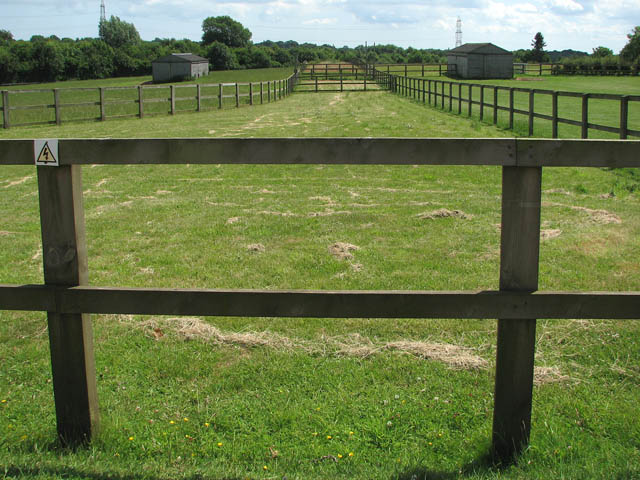

Führen, weichen, warten
Klare, ruhige Übungen vom Boden stärken Kommunikation, ohne dass jedes Zusammensein Reiten sein muss.
Auf dem Land hat gefühlt jeder zweite Pferde auf seinem Grundstück. Ob das dem Tier gerecht wird, fragt kaum jemand.

Pferde sind Fluchttiere und Herdentiere. In der Natur leben sie in Familienverbänden, fressen zusammen, ruhen zusammen, bewegen sich zusammen. Ein Pferd allein auf einer Koppel ist ein Pferd in Isolation. Chronischer Stress, Stereotypien (Koppen, Weben, Boxenlaufen) und Apathie sind die Folge.
Mindestens ein Artgenosse ist Pflicht. Andere Tiere (Esel, Ponys, Ziegen) können ein Pferd begleiten, ersetzen aber keinen echten Artgenossen der gleichen Art.
Beschäftigung ersetzt keine Herde und keine Fläche. Sie kann aber helfen, Vertrauen, Körpergefühl und Alltagssicherheit aufzubauen.
Klare, ruhige Übungen vom Boden stärken Kommunikation, ohne dass jedes Zusammensein Reiten sein muss.
Planen, Jacken, Geräusche, Hänger, Hufe geben: kleine Trainingseinheiten machen den Umgang sicherer und stressärmer.
Gemeinsames Gehen, unterschiedliche Untergründe und ruhige Umwelterfahrung können Pferde sinnvoll beschäftigen.
Die Leitlinien zur Pferdehaltung des BMEL empfehlen für einen Offenstall mit Auslauf und Weide mindestens 150 m² befestigte Fläche pro Pferd plus Weidezugang. Für reine Weidehaltung werden je nach Bodenbeschaffenheit 1.000–2.000 m² pro Pferd genannt – und selbst das ist ein Mindestmaß.
Wildpferde legen 15–30 km am Tag zurück. Sie grasen dabei im Schritt – eine natürliche Kombination aus Bewegung und Nahrungsaufnahme, die keine Koppel der Welt vollständig ersetzen kann. Tägliches Reiten oder Bewegen ist Pflicht, nicht Bonus.
Offenstall/Aktivstall: Die artgerechteste Form. Pferde haben Zugang zu Unterstand, Auslauf und Weide und können sich frei bewegen, Sozialkontakte pflegen und selbst entscheiden, wann sie fressen, ruhen oder laufen.
Boxenhaltung: In vielen Reitställen Standard. Eine 3 × 3 m Box ist für ein Pferd, das in der Natur Kilometer zurücklegt, eine Zelle. Boxenhaltung ist nur vertretbar, wenn täglich mehrstündiger Auslauf und Sozialkontakt gewährleistet sind.
Anbindehaltung: In Teilen Deutschlands noch verbreitet, von Tierschutzorganisationen wie dem Deutschen Tierschutzbund klar abgelehnt. Das Tier kann sich nicht drehen, nicht liegen, nicht mit Artgenossen interagieren.
| Posten | Monatlich |
|---|---|
| Stallmiete (Offenstall / Box) | 150–450 € |
| Futter (Heu, Kraftfutter, Mineralfutter) | 80–200 € |
| Hufschmied (alle 6–8 Wochen) | 30–80 € |
| Tierarzt (Impfung, Entwurmung, Zahnkontrolle) | 30–80 € |
| Versicherung (Haftpflicht, OP) | 30–60 € |
| Ausrüstung (Sattel, Trense, Decken, Pflegemittel) | 20–50 € |
| Gesamt pro Monat | 340–920 € |
Nicht eingerechnet: Reitunterricht, Turniergebühren, Notfall-OPs (Koliken: 3.000–10.000 Euro), Hufreheschübe, chronische Erkrankungen. Quelle: Zusammenstellung aus FN-Empfehlungen und Erhebungen der Pferdekostenstudie. Was dich die Psychologie hinter der Entscheidung für ein Tier lehrt: Kosten werden fast immer unterschätzt.
Wer ein Pferd will, aber bei den Kosten, dem Zeitaufwand oder der Erfahrung unsicher ist: Eine Reitbeteiligung ist kein Kompromiss, sondern oft die bessere Wahl. Du teilst dir die Versorgung und die Kosten mit dem Besitzer, sammelst Erfahrung im Alltag mit einem Pferd und merkst nach ein paar Monaten, ob du wirklich bereit bist – oder ob die Vorstellung schöner war als die Realität. Viele Pferdebesitzer suchen aktiv nach zuverlässigen Reitbeteiligungen, weil sie Hilfe bei der täglichen Versorgung brauchen.
Wa(h)re Haustier(liebe) ist ein privates Projekt – werbefrei, unabhängig und ehrenamtlich. Die laufenden Kosten für Hosting, Domain und Recherche tragen wir selbst. Wenn dir diese Seite geholfen hat, freuen wir uns über Unterstützung – für uns oder direkt für den Tierschutz:
Spenden an uns als Privatpersonen sind nicht steuerlich absetzbar. Die Streunerhilfe Plau e. V. ist ein eigenständiger gemeinnütziger Verein – dort ist deine Spende steuerlich absetzbar und fließt direkt in die Versorgung und Kastration von Streunerkatzen.